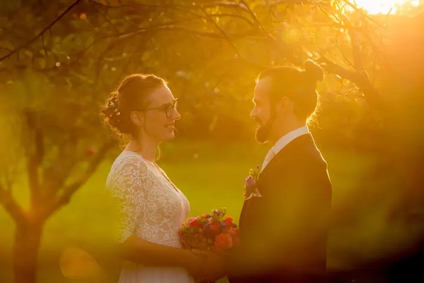
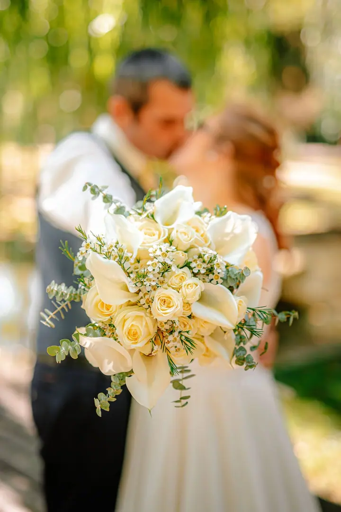

jedna
Svatební focení
Můžu fotit jen obřad, skupinovou fotku a portréty, nebo celý den od příprav u nevěsty až po hostinu. Portréty stihneme rychle, takže nebudete dlouho pryč od svých přátel.

Svatební fotograf · Žďár nad Sázavou a okolí, Vysočina, Svratka

Jmenuji se Pavel Slavíček a pocházím z malebného městečka Svratka. Od roku 2012 fotím hlavně svatby ve Žďáře nad Sázavou a okolí, ale před objektivem se mi objevují i těhulky a rodiny s dětmi. Focení je moje životní vášeň.
Více o mně
Co fotím
jedna
Můžu fotit jen obřad, skupinovou fotku a portréty, nebo celý den od příprav u nevěsty až po hostinu. Portréty stihneme rychle, takže nebudete dlouho pryč od svých přátel.
dvě
Před objektivem mám i rodiny s dětmi. Často se ke mně vracejí novomanželé, které jsem fotil na svatbě.
tři
Pro budoucí maminky a páry, které čekají miminko. Pro mnohé je to další focení po svatbě.
Po dohodě fotím i dronem. Svatbu a místo, kde se konala, tak uvidíte i shora.
K večeru vás možná vytáhnu ven za západem slunce.


Za objektivem
Svatby fotím od roku 2012 a pořád mě to baví. Svatební focení je pro mě láska, ne práce, a díky tomu se mi daří zachytit atmosféru, která vzniká mezi novomanželi a hosty. Každá svatba je jiná a já se vždycky přizpůsobím jejímu prostředí.
Žďársko znám dobře, takže vám můžu doporučit restaurace, penziony i zákoutí, kde se hezky fotí. Portréty se snažím zvládnout rychle, abyste nebyli dlouho pryč od svých přátel. K večeru vás ale možná vytáhnu ven, protože nevěsta a ženich v zapadajícím slunci se na svatbě prostě hodí.
Mimo svatby fotím přírodu a vydávám vlastní kalendář. Mám profesionální vybavení, po dohodě fotím i dronem a pracuji na vlastní řadě foto-doplňků. S mnoha novomanželi jsem zůstal v kontaktu a po čase se mi ozvou kvůli těhotenskému nebo rodinnému focení.
Pavel
Zavolejte nebo napište, ověříme termín a místo vaší svatby a domluvíme se, jak dlouho vás mám fotit.
Buď jen obřad, skupinovou fotku a portréty, nebo celý den od příprav u nevěsty přes obřad až po příjezd na hostinu.
Pohybuji se mezi vámi nenápadně. Portréty pojmeme jako krátkou procházku po okolí a večer případně vyrazíme za západem slunce.
Fotky upravím v profesionálním softwaru. Na přání připravím i černobílé verze, sépii nebo výřezy.
Portfolio
Fotografie jsou ilustrační
Otázky
Focení se mnou netrvá věčnost. Portréty se snažím zvládnout co nejrychleji, abyste si užili svatbu se svými blízkými.
Fotografování obřadu, skupinovou fotku a portréty v blízkém okolí. Jsem k dispozici až 2,5 hodiny a dostanete zhruba 150 upravených fotografií. Balíček lze prodloužit o půl hodiny.
Nejčastěji fotím na Žďársku a v okolí, třeba v Novém Městě na Moravě, Havlíčkově Brodě nebo Přibyslavi. Do neznámého kraje jezdím méně, ale rychle se zorientuji a krásné místo pro portréty najdu i tam.
Ano, po dohodě nafotím i letecké záběry.